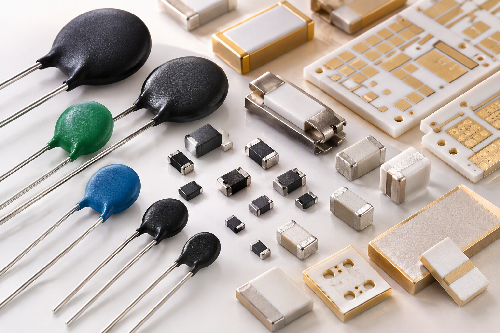

Lead Wire NTC
리드형 온도 측정·보상용 NTC Thermistor.
Viking Tech 온도·특수 부품 제품군을 용도별로 확인할 수 있습니다.

리드형 온도 측정·보상용 NTC Thermistor.
표면실장형 소형 온도 센서.
고신뢰성 온도 감지용 SMD NTC.
차량 전장 온도 감지용 제품.
열 전달과 열 관리 설계용 특수 부품.
열 방출과 박막 회로용 세라믹 기판.
고객 요구 기반 맞춤형 수동부품 솔루션.
첨부된 Viking 카탈로그 분류를 기준으로 정리했습니다. 실제 공급 가능 시리즈와 최신 사양은 MAXGAIN SYSTEMS에 문의해 주세요.